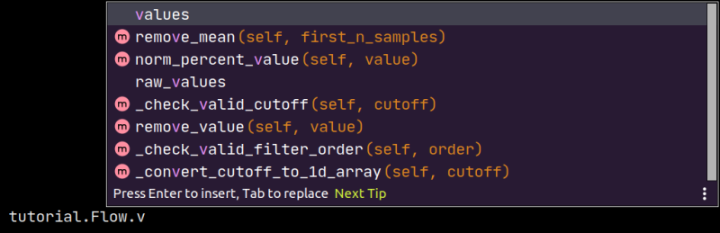
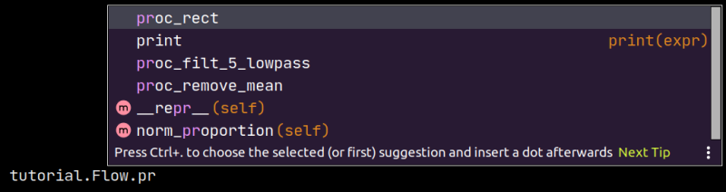

How To Guides
Export Spike2 data to .mat
Rather than read .smr files directly, spike2py reads .mat files exported from Spike2.
spike2py assumes that you used the default export settings when you exported your data. The process of exporting your data to .mat files is made simpler by running this Spike2 script, which batch exports all .smr files from a given directory to .mat format.
Import .mat files using spike2py
With our Spike2 data exported to .mat, we are now ready to import our data into Python using spike2py. To do this we need two of the most important classes in spike2py: TrialInfo and Trial.
The most basic way to import our data is as follows:
>>> from spike2py.trial import TrialInfo, Trial
>>> trial_info = TrialInfo(file='tutorial.mat')
>>> tutorial = Trial(trial_info)
And now we have our data imported and accessible in the tutorial variable.
But what if my data is not in the same folder?
That is easy. We simply have to provide the full path to our file. For example, on Linux and Mac I would use:
>>> trial_info = TrialInfo(file='/home/martin/Desktop/tutorial.mat')
And on Windows I would use:
>>> trial_info = TrialInfo(file='C:\Users\Martin\Desktop\tutorial.mat')
Provide additional inputs to TrialInfo
TrialInfo requires that file be specified. If this is the only parameter that we provide, all other parameters will default to None. While this is fine if we are having a quick look at our data, we usually will want to specify a few more of the TrialInfo parameters.
If we import TrialInfo and create an instance with no inputs, we get the following:
>>> from spike2py.trial import TrialInfo
>>> trial_info = TrialInfo()
>>> trial_info
TrialInfo(
file=None,
channels=None,
name=None,
subject_id=None,
path_save_figures=None,
path_save_trial=None,
)
If we pass inputs to TrialInfo, we might get something like this:
>>> trial_info
TrialInfo(
file='tremor_postural.mat',
channels=['Flow', 'Co2'],
name='fatigue_50max',
subject_id='sub001',
path_save_figures='/home/martin/Desktop/figures',
path_save_trial='/home/martin/Desktop/data',
)
See the following sections for an explanation of each of these additional inputs and how they are used by spike2py.
Specify channels to import
There may be times when we don’t want to import all available channels. We can specify the channels we want to import by passing a list of channel names to TrialInfo.
For example, the following code imports only the Flow, and Co2 channels from tutorial.mat:
>>> from spike2py.trial import TrialInfo, Trial
>>> channels = ['Flow', 'Co2']
>>> trial_info = TrialInfo(file='tutorial.mat', channels=channels)
>>> tutorial = Trial(trial_info)
>>> tutorial.channels
[('Flow', 'waveform'), ('Co2', 'waveform')]
Note that we need to use the same spelling and capitalisation that we used in our Spike2 channel names.
Specify a trial name and a subject id
Depending on how we process our data and the additional files and figures we want to generate, it can be useful to have access to a human-readable trial name and the id of the subject from whom we collected the data.
>>> from spike2py.trial import TrialInfo, Trial
>>> sub_id = 'sub001'
>>> trial_name = 'fatigue_50max'
>>> trial_info = TrialInfo(file='tutorial.mat',
name=trial_name,
subject_id=subject_id)
>>> tutorial = Trial(trial_info)
>>> tutorial.info.name
'fatigue_50max'
>>> tutorial.info.subject_id
'sub001;
Specify paths to save figures and data
By default, if we generate figures or save (i.e. pickle) our data, these will be stored in figures and data folders created in the folder that contains the .mat file we passed to TrialInfo. However, we can specify a folder for one or both of these. For example:
>>> from spike2py.trial import TrialInfo, Trial
>>> path_save_figures='/home/martin/Desktop/nice_figures'
>>> path_save_trial = '/home/martin/Documents/vault'
>>> trial_info = TrialInfo(file='tutorial.mat',
path_save_figures=path_to_figures,
path_save_trial=path_save_trial
)
>>> tutorial = Trial(trial_info)
>>> tutorial.info.path_save_figures
PosixPath('/home/martin/Desktop/nice_figures')
>>> tutorial.info.path_save_trial
PosixPath('/home/martin/Documents/vault')
The PosixPath part of the return value reflects the fact that spike2py uses pathlib to create and manage paths.
Apply signal processing steps to waveform channels
With spike2py, we can process our waveform signals with relative ease. While not all forms of signal processing are included, most of the common ones are.
As was demonstrated in the Tutorial, signal processing steps can be chained together. For example:
>>> tutorial.Flow.remove_mean().lowpass(cutoff=5).rect()
And in case we want to compare processed and unprocessed data, or have them available for plotting, spike2py automatically creates a copy of the data and assigns it an informative name prior to applying each signal processing step.
Let’s consider the processing we just applied to the Flow channel of the tutorial trial. When we first start, there is a values attribute and a raw_values attribute, and these are the same.
{kind=link}
However, each signal processing step updates values. That is, values is always the most current version of our waveform signal.
At the same time, we might want to access the original raw signal. This is available in raw_values. Similarly, we have access to our waveform at each step of the processing pipeline. spike2py creates a copy of the waveform at each processing step and adds it as an attribute to the channel. This is done when we apply signal processing steps one at a time or all together as part of a chain. The names of these attributes all start with proc_. For example, here is what is available after we apply the processing pipeline from above:
{kind=link}
Below is a list of the available signal processing steps. Click on their names to be taken to their full documentation.
remove_mean(): Subtract mean of first n samples (default is all samples)
remove_value(): Subtracts a value (e.g. an offset)
lowpass(): Apply dual-pass Butterworth lowpass filter
highpass(): Apply dual-pass Butterworth highpass filter
bandpass(): Apply dual-pass Butterworth bandpass filter
bandstop(): Apply dual-pass Butterworth bandstop filter
calibrate(): Calibrate using linear formula y=slope*x+offset, providing slope and offset values
norm_percentage(): Normalise data to be between 0-100%
norm_proportion(): Normalize data to be between 0-1
norm_percent_value(): Normalise data to a percentage of a provided value
rect(): Rectify data.
interp_new_times(): Interpolate datato a new time axis
interp_new_fs(): Interpolate datato a new sampling frequency
linear_detrend(): Remove linear trend from data
Run the spike2py test suite
In order to run the spike2py testing suite, you will have to get the full spike2py from GitHub. You will also need to ensure you have the various requirements needed to run spike2py, pytest, and the pytest-mpl plugin for pytest. All these packages and plugins are available on Pypi and can be installed using pip.
pytest-mpl is a plugin that can be used to test figures that are generated with matplotlib.
To run the full suite of tests and return the code coverage, run the following command from the root directory of the spike2py package:
$ pytest --mpl --cov=spike2py tests/
If you want to run all tests, except those that generate figures, you can run the following command:
$ pytest -m 'not fig_gen'
Add tests to spike2py
If you have added some features to spike2py, please add tests that cover the new code.
All test files are located in the tests folder in the root directory of the spike2py package.
If your new feature was added to an existing module, please add your tests to the file named test_<module_name>.py. For example, if you added something to the trial.py module, your test(s) should go in test_trial.py.
Any new fixtures can be added to the conftest.py file.
If your tests need to access a .mat file, it can be added to the payloads directory located within the tests directory.